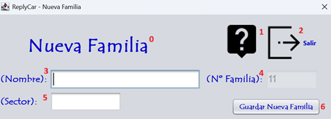

El alta de una familia consiste en el rellenado de la ficha con sus datos para poder realizar las facturas y el seguimiento de las intervenciones. Sigue las instrucciones de la fotografía para realizar el proceso correctamente. Para realizar el alta de una familia debe ingresar los datos que corresponden a la numeración expuesta en la fotografía. Vamos a proceder:

0 - Título de la pantalla, descripción de lo que significa la pantalla.
1 - Botón para proceder a leer la ayuda de la aplicación.
2 - Botón para salir de la aplicación.
3 - Ingresa el nombre de la familia.
4 - Nº de la familia que tiene la familia.
5 - Ingresa el sector de la familia.
6 - Guardar la nueva familia.
Nota: Pulsando F1 en la ventana principal, se abrirá esta página de ayuda.